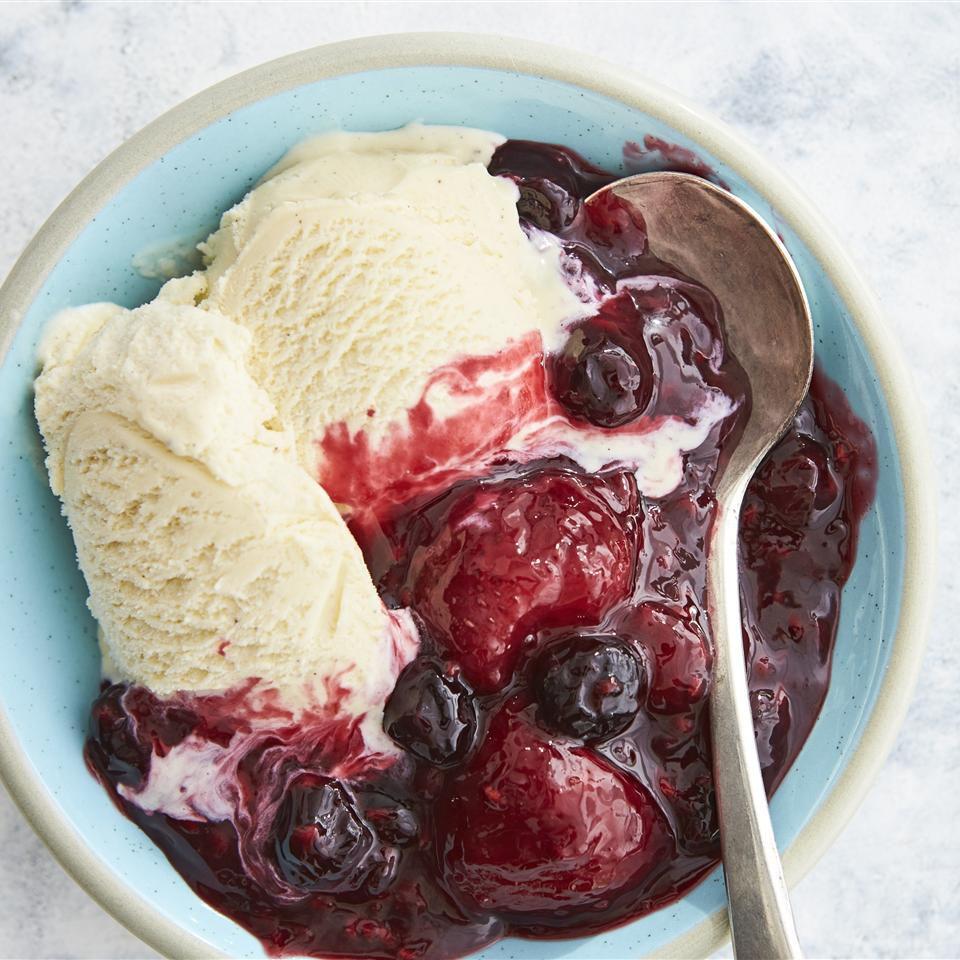

Berry Compote Recipe

Description
Compote is a dessert originating from medieval Europe made of fruit in sugar syrup. Whole fruits or pieces of fruit are cooked in water with sugar and spices.
This berry compote is made in a slow cooker with frozen berries and orange juice. It's a yummy dessert by itself or over ice cream. You'll find a detailed ingredient list and step-by-step instructions in the recipe below
Ingredients
- Berries: 6 cups of frozen mixed berries.
- Sugar: 1/2 a cup of white sugar.
- Orange juice: 1/4 cup of orange juice.
- Orange zest: 1 1/2 teaspoons of finely grated orange zest.
- Cornstarch: 2 tablespoons of cornstarch.
- Water: 2 tablespoons of water.
Steps
- Stir frozen berries, sugar, orange juice, and orange zest together in a slow cooker. Cover and cook on High until bubbling, about 1 1/2 hours.
- Stir cornstarch and water together in a cup until fully dissolved. Stir into berry mixture. Cover again and cook until thickened, 5 to 10 minutes. Serve warm or at room temperature.